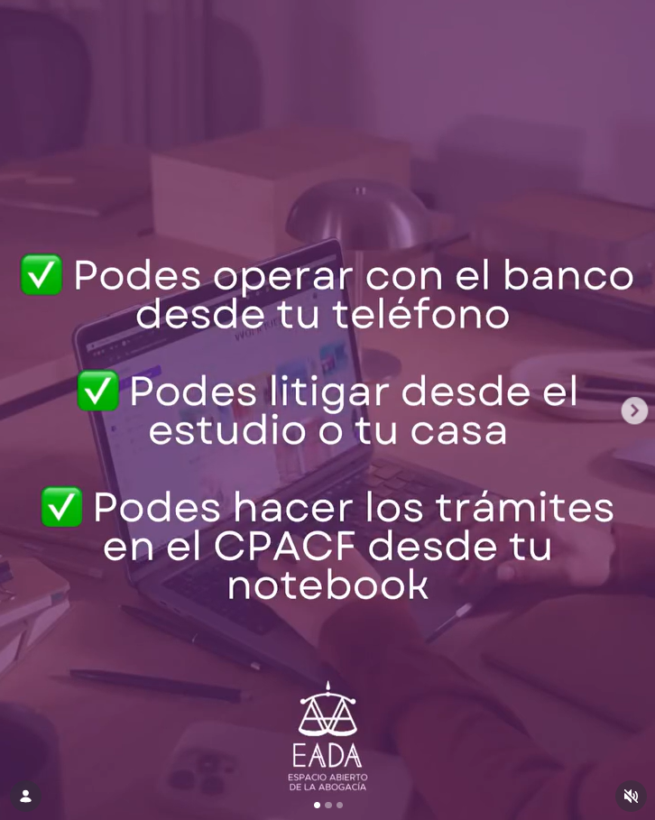
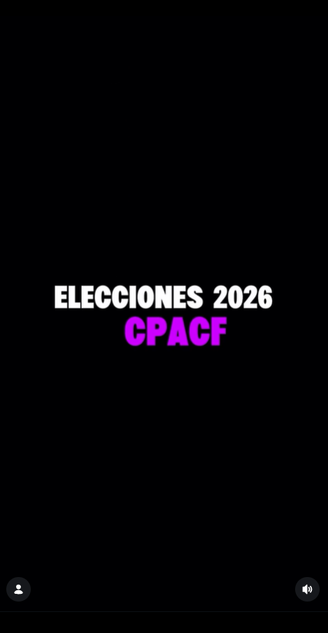
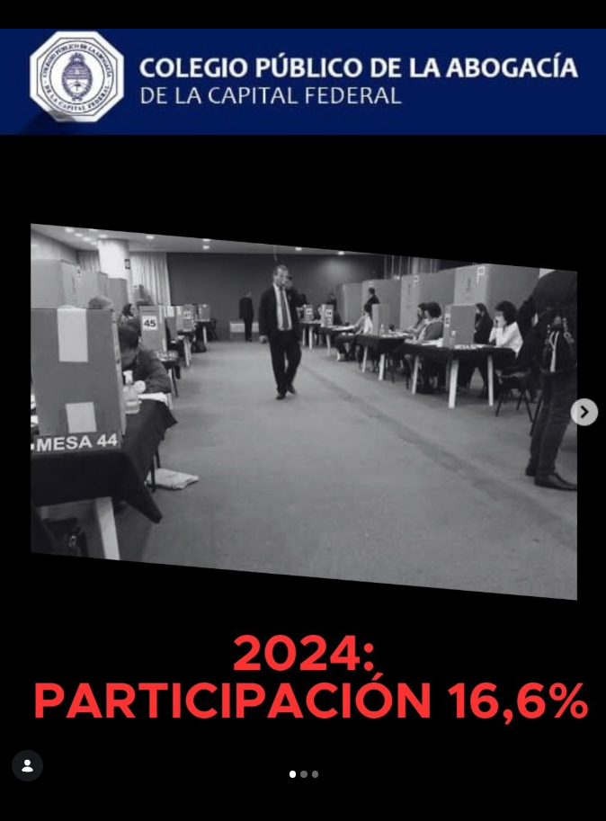
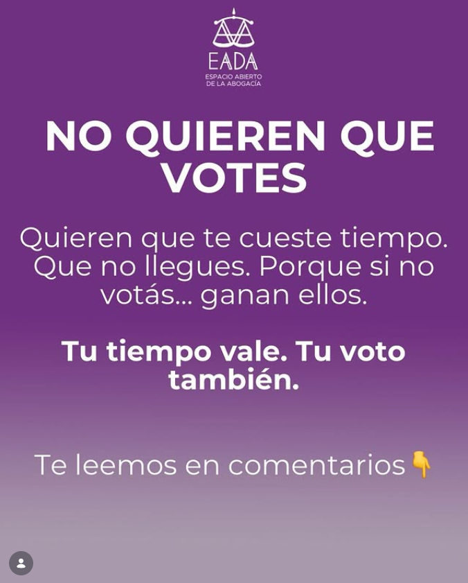

Tu tiempo vale.
Tu voto también.
Conocé cómo el voto digital transforma la participación y hace más ágil tu elección.
¿Por qué Voto Digital?Conocé cómo el voto digital transforma la participación y hace más ágil tu elección.
¿Por qué Voto Digital?Votá desde donde estés, sin perder tiempo.
Tu voto está protegido y encriptado digitalmente.
Hacerlo más fácil, significa más colegas votando.
Comparativa de participación: 2022, 2024 y objetivo a futuro
El voto digital puede transformar la participación en el Colegio
El Colegio Público Digital: una propuesta para modernizar la abogacía
Transformemos juntos la manera en que decidimos el futuro del Colegio.
Conocé nuestro proyecto de ley ¡Sumate a participar!
Voto Digital en redes

El voto digital es respeto por el tiempo de cada colega. Modernizar el Colegio es defender la abogacía.
Ver en InstagramNo se trata solo de tecnología, se trata de justicia. Porque tu tiempo vale, tu voto también.
Ver en Instagram
En 2026 la abogacía necesita dar vuelta el Colegio, dar un giro de 180 grados.
Ver en Instagram
La abogacía ya trabaja online, firma digitalmente y litiga en internet.
Ver en Instagram
Quieren que te cueste. Porque si no votás… ganan ellos.
Ver en Instagram